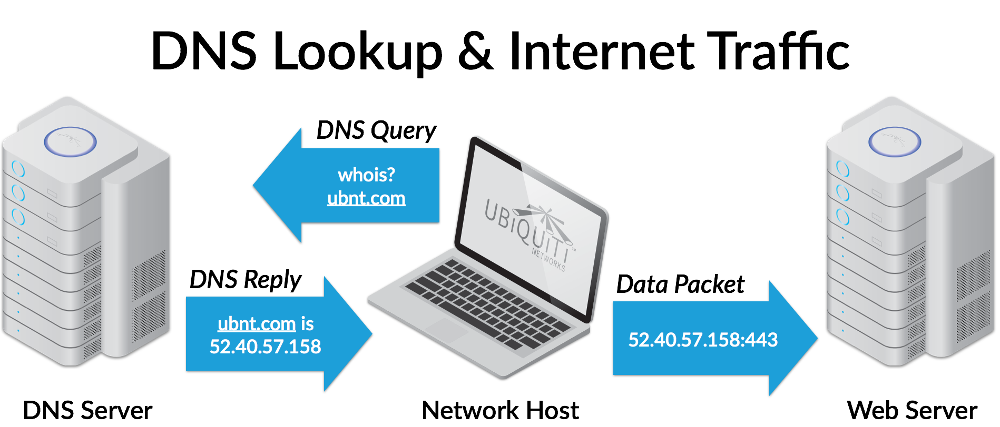

Domain Name System - Private DNS
Having a private DNS server can provide many benefits.
- Internally refer to devices by name rather than IP.
- Filter out traffic roaming around your network, like ads.
- If the Internet goes down, you can still use local resources.
